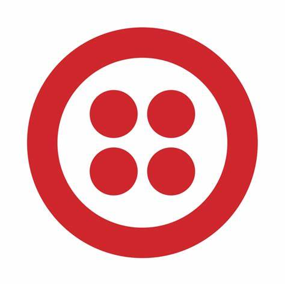

Olá, eu sou
Charley Kevin


Sou especialista em desenvolvimento de sistemas e soluções personalizadas. Tenho expertise na criação de bots inteligentes, desenvolvimento de sites em WordPress e integração de sistemas complexos.
Utilizo tecnologias avançadas como Laravel, Twilio e Filament para garantir eficiência, escalabilidade e inovação em cada projeto.
Desenvolvedor de
Sistemas
Customização de SAAS
05
Anos de Experiência